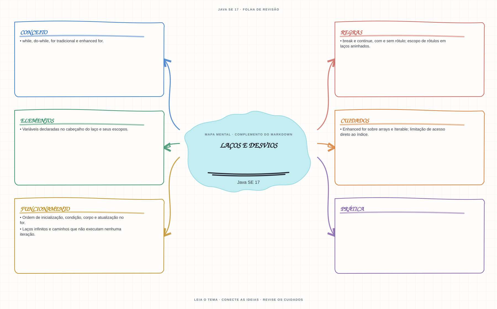

Ver mapa mental deste assuntoSimular inicialização, condição, corpo e atualização de laços, inclusive desvios rotulados.
Primeiro contato: aprenda o conceito e pratique antes de consultar os detalhes de prova. Voltar aos fundamentos se algum termo ainda for novo.
- Leia o objetivo e localize a ideia principal no conteúdo abaixo.
- Preveja o resultado, compile e execute o exemplo.
- Faça a atividade sem copiar a solução e confira a checagem comentada.
EXEMPLO DE CONSOLE
Veja a regra em execução
Antes de executar, anote sua previsão. Compile o exemplo com o JDK e compare a saída observada com as regras deste assunto.
Comandos para compilar e executar
javac -d target/bin src/02-controle-de-fluxo/lacos-e-desvios/LacosEDesviosExample.java
java -cp target/bin LacosEDesviosExampleA execução imprime o resultado no console para você comparar com sua previsão.
Consultar código-fonte: LacosEDesviosExample.java
public class LacosEDesviosExample {
public static void main(String[] args) {
System.out.println("=== Lacos, continue e break rotulado ===");
int soma = 0;
for (int numero = 1; numero <= 5; numero++) {
if (numero == 3) {
System.out.println("continue pula o numero " + numero + ".");
continue;
}
soma += numero;
}
System.out.println("Soma dos valores processados (1 + 2 + 4 + 5): " + soma);
int encontrados = 0;
busca:
for (int linha = 1; linha <= 3; linha++) {
for (int coluna = 1; coluna <= 3; coluna++) {
System.out.println("Verificando linha " + linha + ", coluna " + coluna);
if (linha == 2 && coluna == 2) {
encontrados++;
break busca;
}
}
}
System.out.println("break busca encerrou os dois lacos; alvo encontrado: " + encontrados);
}
}
PRATIQUE AGORA
Faça uma pequena alteração por conta própria
Percorra os números de 1 a 10, imprima apenas os pares e some os valores impressos.
Concluído quando: o programa compilar, produzir o resultado esperado e você conseguir explicar a regra aplicada.
CHECAGEM RÁPIDA · Laços e desvios
Em um laço aninhado, o que continue externo faz?
Conferir resposta comentada
Interrompe a iteração atual do laço identificado por externo e segue para a próxima iteração desse laço.
Estude
while,do-while,fortradicional e enhancedfor.- Ordem de inicialização, condição, corpo e atualização no
for. breakecontinue, com e sem rótulo; escopo de rótulos em laços aninhados.- Laços infinitos e caminhos que não executam nenhuma iteração.
- Variáveis declaradas no cabeçalho do laço e seus escopos.
- Enhanced
forsobre arrays eIterable; limitação de acesso direto ao índice.
Prática
Trace laços aninhados com break e continue rotulados e registre cada valor impresso e quantas vezes o corpo é executado.
Como este capítulo se relaciona com cada exame
Fundamentos reaproveitáveis; `switch` moderno não é sintaxe Java 8.
Base de estudo deste portal; confirme o mapeamento com o blueprint vigente.
Conceitos úteis; revise pattern matching para `switch` em Java 21.
Orientação editorial sobre reaproveitamento do material; não representa objetivos oficiais nem garante cobertura do exame. Consulte o comparativo e as fontes da Oracle.